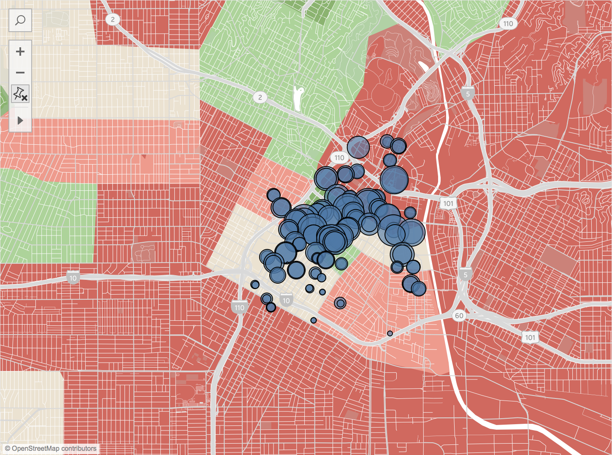
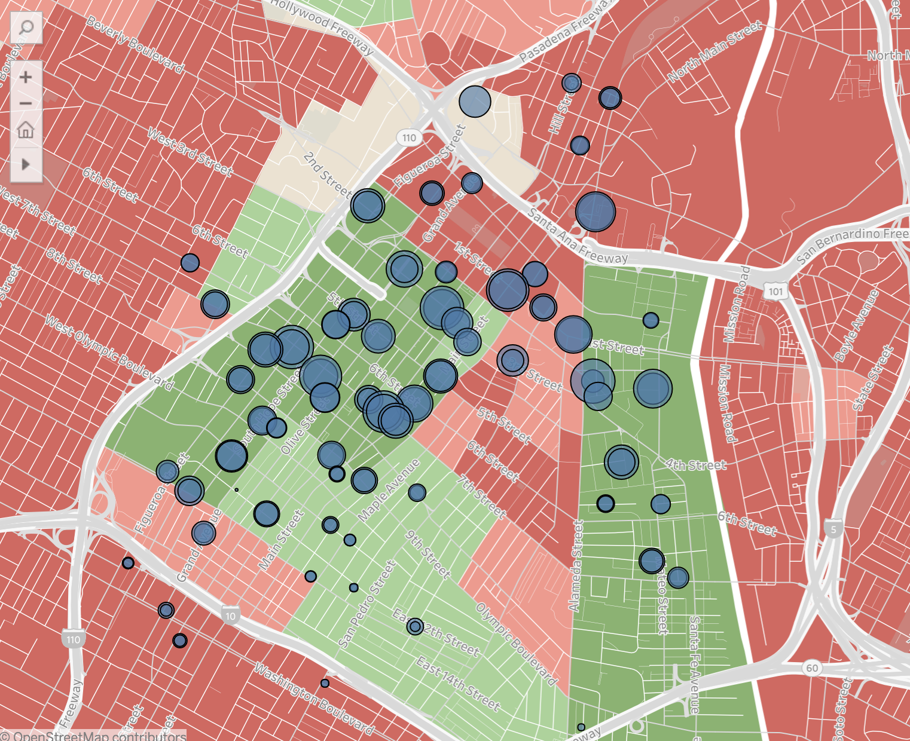

Bonus Insights
Bonus 1: Are Certain Trip Route - Passholder Combinations More Popular?


Immediately observing the magnitudes from the first graphic, we see that
the One Way - Monthly Pass combinations are the most popular
trip combination at 77,532 rides.
Further, the second graphic gives us a better understanding of the distribution of combinations.
More than half of trip combination sare One Way - Monthly Pass combinations, followed second
by a relatively much smaller 24.75% of trip combinations coming from One Way - Walk-up combinations.
In thinking about bike sharing, this comes at a bit of a surprise, as typically one may hypothesize that
either One Way - Walk-up or Round Trip - Walk-up would be the most popular. This could be explained by the
fact that L.A. is a bustling city, and thus many "regular commuters" (as explored in
question 4) rely on bike sharing as a means of commute to work.
Even excluding the massive 58.55% of One Way - Monthly Pass trip combinations, One Way combinations
still make up 22.15% more trips as compared to Round Trip combinations (31.8% vs. 9.65%).
Bonus 2: How Does Potential Gentrification (from Socioeconomic Factors) Affect Bike Usage
We map bike stations by location against a layer of socioeconomic data to see if there is
any correlation:

Initially, a map of stations with a layer of 2018 Per Capita Income by Zipcode was created. Zooming
into a larger cluster of bikeshares, there was an interesting plot of lower Per Capita Income peeking
out of the large cluster of bike stations as seen below:

The layer was then changed to Per Capita Income by Block which is more specific (since the Per
Capita by Zipcode could cover up niche gentrification). The map was zoomed into a bit more as well:

Now it becomes even more apparent that stations and bike usage almost seem to be largely clustered
in green-colored havens of higher Per Capita Income areas, possibly explained by more touristry areas, which explains
the immediate gentrification, and thus lower Per Capita Income seen right outside of the bubble.
A simple Google image search for "Olympic Boulevard Los Angeles" (one of the street names on the above image)
reveals images of a large dense city, only confirming our hypothesis of potential gentrification around areas of
high bikeshare stations.
This would be a fascinating topic for L.A. Bikeshare Metro to explore in terms of
addressing ethical dilemmas and advancing social good initiatives.
Bonus 3: How Does Occupation Level (White vs. Blue Collar) Affect Bikeshare Station Placement
Simply because Bonus 2 was so fascinating, we create a new map of the same data, but layered with 2018 counts of Blue collar and White collar workers:
Immediately we see that areas with more White Collar workers (higher on the socioeconomic
spectrum), or greener areas, have more bikesharing stations. To confirm the inverse, we explore the Blue
Collar side:

Sure enough, redder areas, or those with fewer Blue Collar workers (i.e. manual laborers),
have more bikesharing stations. Meaning bikesharing seems like a privilege made more
accessible to White Collar workers than Blue Collar workers.
Again, this would be a great area for LA Bikeshare Metro to look into
as making bikesharing more accesible for White Collar workers is only exacerbating the vicious cycle
of socioeconomic inequality by potentially making it harder for Blue Collar workers to do their already
difficult jobs.